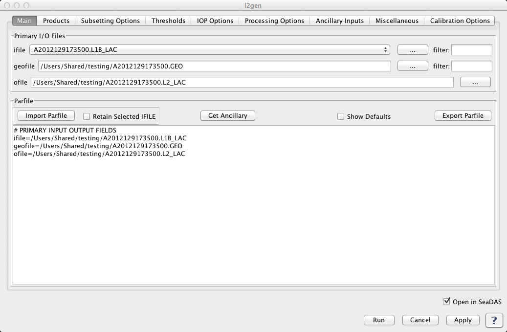

| l2gen | |
Creates a Level 2 file from an input Level 1 (A or B) file.
Tools -> OCSSW Processing -> l2gen
For the command line version of help run l2gen -help
The l2gen GUI is dynamically created based on the selected IFILE. Once the IFILE is specified, l2gen is run in the background in a special mode in order to obtain and populate all the parameters and defaults for l2gen GUI. This means that if a new version of l2gen comes out, with new parameters, defaults, etc., your current version of SeaDAS will automatically support these parameters. Note that because of this l2gen dependency on the building of the GUI, SeaDAS 7 requires l2gen version 6.5.7 or later.
All l2gen parameters are contained within a series of categorized tabs:
Non-Defaults Selected Indicator (*)
When a parameter is chosen to be
a non-default value, that parameter will show up in the parfile textarea of the MAIN tab.
As an aid to help direct
the user to tabs containing at least one parameter set to a non-default value, an asterix
(*) will appear at the top
of the tab. Also within the tab, an asterix will appear next to each parameter which is a
non-default value.
THE MAIN TAB |
|
Selecting the IFILE Once this IFILE has been specified, the mission and data level are obtained from this file. If the IFILE data level matches the expected input data level of l2gen, the GUI will then use this file to run l2gen in the background in order to obtain and populate all the parameters and defaults of l2gen GUI. One thing very important to note is that since this GUI is built from the IFILE, a subsequent selection of a different IFILE will cause the GUI to be rebuilt with all the fields set to the defaults. If you have parameters already specified and wish to save these, then the best route would be to save them in a parfile, select a new IFILE, then reload the parfile. An alternate way to try to keep your currently selected parameters, is to type the ifile name into the parfile textarea in the GUI.
Selecting the OFILE and the GEOFILE
Get Ancillary Files
Show Defaults
Suite
Parfile Textarea It's useful to note that when you are editing text in the parfile textarea you can click "Apply". This will cause the text to update all the GUI parameters. The parfile textarea will automatically be reformatted in a consistent way, so be aware that the order of your hand-entered parameters may change due to this. Clicking on another field or another tab will also have the same effect as clicking the "Apply" button. To reset all parameters within a given tab to the default, click the button at the bottom of the panel. To reset all parameters within all tabs, no button as of yet exists but you can simply delete the entire parfile textarea in the main tab, and this will restore everything to default. |
|
 |
THE PRODUCTS TAB |
|
The l2gen product parameter L2PROD is initially set to the default value. At any time L2PROD can be restored to the default value by clicking 'Restore Defaults' at the bottom of this tab. L2PROD can be specified in a multitude of ways. Note that a change within any of one these product specifier controls will automatically update the others.
Product Selector
Wavelength Limiter Note that a change in the 'Wavelength Limiter' will not directly change the products selected, but only effects the behaviour of the 'Product Selector'. Also note that the Wavelength Limitor tool is expected to contain a list of wavelengths regardless of the mission selected. The wavelengths do vary depending on mission. If this tool does not contain any wavelengths then there is likely a problem and could perhaps be a bad IFILE.
Selected Products Textarea |
|
|
THE PROCESSING OPTIONS TAB |
|
|
THE SUBSETTING OPTIONS TAB |
|
This contains 2 sets of mutually exclusive options: pixels (spixl, epixl, dpixl, sline, eline, dline) and coordinates (north, south, east, west). This GUI will not permit selection of both sets, resetting the prior selection to the default. (i.e. If you set pixel field to a non-default value and then subsequently set a coordinate field to a non-default value, the latest selection (the coordinate field) will take precedent and the previously set field (the pixel field) will be automatically reset to the default. |
|
|
THE THRESHOLDS TAB |
|
|
THE ANCILLARY INPUTS TAB |
|
|
THE IOP OPTIONS TAB |
THE MISCELLANEOUS TAB |
|
|
THE CALIBRATION OPTIONS TAB |
|
|
l2gen 6.5.6 (Nov 17 2011 13:42:08)
Usage: l2gen argument-list
The argument-list is a set of keyword=value pairs. The arguments can
be specified on the commandline, or put into a parameter file, or the
two methods can be used together, with commandline over-riding.
The list of valid keywords follows:
-help (bool) (alias=-h,--help) (default=false) = print usage information
-version (bool) (alias=--version) (default=false) = print the version
information
-dump_options (bool) (alias=--dump_options) (default=false) = print
information about each option
-dump_options_paramfile (string) (alias=--dump_options_paramfile) = print
information about each option to paramfile
-dump_options_xmlfile (string) (alias=--dump_options_xmlfile) = print
information about each option to XML file
par (string) = input parameter file
pversion (string) (default=Unspecified) = processing version string
suite (string) (default=OC) = product suite string for loading
suite-specific defaults
eval (int) (default=0) = evaluation bitmask
0: standard processing
1: init to old aerosol models
16: enables MODIS cirrus mask
32: use test sensor info file
64: use test rayleigh tables
128: use test aerosol tables
256: use test polarization tables
1024: mask modis mirror-side 1 (navfail)
2048: mask modis mirror-side 2 (navfail)
4096: remove warm tests for SSTref
8192: use alt sensor infor file in eval
32768: enables spherical path geom for dtran
ifile (string) (alias=ifile1) = input L1 file name
ilist (string) = file containing list of input files, one per line
geofile (string) = input L1 geolocation file name (MODIS only)
ofile (string) (alias=ofile1) (default=output) = output L2 file #1 name, output vicarious L1B
for inverse mode
ofile[#] = additional output L2 file name
il2file (string) (alias=il2file1) = input L2 file names for sensor to be
used as a calibrator. Alternatively, a data point can be used as a
calibrator (e.g. MOBY)
il2file[#] = additional L2 callibration file names
tgtfile (string) = vicarious calibration target file
aerfile (string) = aerosol model specification file
metafile (string) = output meta-data file
l2prod (string) (alias=l2prod1) = L2 products to be included in ofile #1
l2prod[#] = L2 products to be included in ofile[#]
spixl (int) (default=1) = start pixel number
epixl (int) (default=-1) = end pixel number (-1=the last pixel)
dpixl (int) (default=1) = pixel subsampling interval
sline (int) (default=1) = start line number
eline (int) (default=-1) = end line number (-1=the last line)
dline (int) (default=1) = line subsampling interval
ctl_pt_incr (int) (default=8) = control-point pixel increment for lon/lat
arrays
proc_ocean (int) (default=1) = toggle ocean processing
1: On
0: Off
2: force all pixels to be processed as ocean
proc_land (bool) (default=off) = toggle land processing
proc_sst (bool) (default=false) = toggle SST processing
(default=1 for MODIS, 0 otherwise)
atmocor (bool) (default=on) = toggle atmospheric correction
mode (int) (default=0) = processing mode
0: forward processing
1: inverse (calibration) mode, targeting to nLw=0
2: inverse (calibration) mode, given nLw target
3: inverse (calibration) mode, given Lw target (internally normalized)
aer_opt (int) (default=99) = aerosol mode option
-99: No aerosol subtraction
> 0: Multi-scattering with fixed model (provide model number, 1-N,
relative to aermodels list)
0: White aerosol extrapolation.
-1: Multi-scattering with 2-band model selection
-2: Multi-scattering with 2-band, RH-based model selection and
iterative NIR correction
-3: Multi-scattering with 2-band model selection
and iterative NIR correction
-4: Multi-scattering with fixed model pair
(requires aermodmin, aermodmax, aermodrat specification)
-5: Multi-scattering with fixed model pair
and iterative NIR correction
(requires aermodmin, aermodmax, aermodrat specification)
-6: Multi-scattering with fixed angstrom
(requires aer_angstrom specification)
-7: Multi-scattering with fixed angstrom
and iterative NIR correction
(requires aer_angstrom specification)
-8: Multi-scattering with fixed aerosol optical thickness
(requires taua specification)
-9: Multi-scattering with 2-band model selection using Wang & Shi
turbidity index (1.30) to switch between SWIR and NIR. (MODIS only,
requires aer_swir_short, aer_swir_long, aer_wave_short, aer_wave_long)
-10: Multi-scattering with MUMM correction
and MUMM NIR calculation
-11: Spectral optimization via Kuchinke (SeaWiFS-only)
-12: Spectral matching via Gordon (SeaWiFS-only)
aer_wave_short (int) (default=765) = shortest sensor wavelength for aerosol
model selection
aer_wave_long (int) (default=865) = longest sensor wavelength for aerosol
model selection
aer_swir_short (int) (default=-1) = shortest sensor wavelength for
SWIR-based NIR Lw correction
aer_swir_long (int) (default=-1) = longest sensor wavelength for SWIR-based
NIR Lw correction
aer_rrs_short (float) (default=-1.0) = Rrs at shortest sensor wavelength for
aerosol model selection
aer_rrs_long (float) (default=-1.0) = Rrs at longest sensor wavelength for
aerosol model selection
aermodmin (int) (default=-1) = lower-bounding model to use for fixed model
pair aerosol option
aermodmax (int) (default=-1) = upper-bounding model to use for fixed model
pair aerosol option
aermodrat (float) (default=0.0) = ratio to use for fixed model pair aerosol
option
aer_angstrom (float) (default=-999.0) = aerosol angstrom exponent for model
selection
aer_iter_max (int) (default=10) = maximum number of iterations for NIR
water-leaving radiance estimation.
mumm_alpha (float) (default=1.72) = water-leaving reflectance ratio for MUMM
turbid water atmospheric correction
mumm_gamma (float) (default=1.0) = two-way Rayleigh-aerosol transmittance
ratio for MUMM turbid water atmospheric correction
mumm_epsilon (float) (default=1.0) = aerosol reflectance ratio for MUMM
turbid water atmospheric correction
degc (int) (default=0) = Deg C for AVHRR
absaer_opt (int) (default=0) = absorbing aerosol flagging option
0: use rhow constant
1: apply chlorophyll climatology to calculate rhow
2: 1+validate against nLw_412 climatology
glint_opt (int) (default=1) = glint correction:
0: glint correction off
1: standard glint correction
2: simple glint correction
outband_opt (int) (default=99) = out-of-band correction for water-leaving
radiances
2: On (default for MODIS, SeaWiFS, OCTS)
0: Off (default for MOS, OSMI)
oxaband_opt (bool) (default=false) = oxygen a-band correction option
(default On for SeaWiFS, OSMI, & OCTS, Off otherwise)
filter_opt (bool) (default=false) = filtering input data option
(default On for OCTS, Off otherwise)
filter_file (string) (default=$OCDATAROOT/sensor/sensor_filter.dat) =
data file for input filtering
brdf_opt (int) (default=-1) = Bidirectional reflectance correction
0: no correction
1: Fresnel reflection/refraction correction for sensor path
3: Fresnel reflection/refraction correction for sensor + solar path
7: Morel f/Q + Fresnel solar + Fresnel sensor
15: Gordon DT + Morel f/Q + Fresnel solar + Fresnel sensor
19: Morel Q + Fresnel solar + Fresnel sensor
gas_opt (int) (default=1) = gaseous transmittance bitmask selector
0: no correction
1: Ozone
2: CO2
4: NO2
8: H2O
iop_opt (int) (default=0) = IOP model for use in downstream products
0: None (products requiring a or bb will fail)
1: Carder
2: GSM
3: QAA
4: PML
5: NIWA
6: LAS
7: GIOP
polfile (string) = polarization sensitivites filename leader
pol_opt (int) (default=-1) = polarization correction (sensor-specific)
0: no correction
1: only Rayleigh component is polarized
2: all radiance polarized like Rayleigh
3: only Rayleigh and Glint are polarized (MODIS default)
4: all radiance polarized like Rayleigh + Glint
rad_opt (int) (default=0) = radiation correction option (sensor-specific)
0: no correction
1: apply MERIS Smile correction
xcalfile (string) = cross-calibration file
xcal_opt (int) = cross-calibration option (sensor-specific)
comma separated list of option values, 1 per band, with bands listed in xcal_wave.
3: apply cross-calibration corrections (polarization and rvs)
2: apply cross-calibration polarization corrections
1: apply cross-calibration rvs corrections
0: no correction
xcal_wave (float) = wavelengths at which to apply cross-calibration. Comma
separated list of sensor wavelength values associated with xcal_opt.
resolution (int) (default=-1) = processing resolution (MODIS only)
-1: standard ocean 1km processing
1000: 1km resolution including aggregated 250 and 500m land bands
500: 500m resolution including aggregated 250 land bands and
replication for lower resolution bands
250: 250m resolution with replication for lower resolution bands
giop_aph_opt (int) (default=2) = GIOP model aph function type
0: tabulated (supplied via giop_aph_file)
2: Bricaud et al. 1995 (chlorophyll supplied via default empirical algorithm)
3: Ciotti and Bricaud 2006 (size fraction supplied via giop_aph_s)
giop_aph_file (string) (default=$OCDATAROOT/common/aph_default.txt) =
GIOP model, tabulated aph spectra
giop_aph_s (float) (default=-1000.0) = GIOP model, spectral parameter
for aph
giop_adg_opt (int) (default=1) = GIOP model adg function type
0: tabulated (supplied via giop_adg_file)
1: exponential with exponent supplied via giop_adg_s)
2: exponential with exponent derived via Lee et al. (2002)
3: exponential with exponent derived via OBPG method
giop_adg_file (string) (default=$OCDATAROOT/common/adg_default.txt) =
GIOP model, tabulated adg spectra
giop_adg_s (float) (default=0.0145) = GIOP model, spectral parameter
for adg
giop_bbp_opt (int) (default=3) = GIOP model bbp function type
0: tabulated (supplied via giop_bbp_file)
1: power-law with exponent supplied via giop_bbp_s)
2: power-law with exponent derived via Hoge & Lyon (1996)
3: power-law with exponent derived via Lee et al. (2002)
5: power-law with exponent derived via Ciotti et al. (1999)
6: power-law with exponent derived via Morel & Maritorena (2001)
7: power-law with exponent derived via Loisel & Stramski (2000)
8: spectrally independent vector derived via Loisel & Stramski (2000)
9: fixed vector derived via Loisel & Stramski (2000)
10: fixed vector derived via lee et al. (2002)
giop_bbp_file (string) (default=$OCDATAROOT/common/bbp_default.txt) =
GIOP model, tabulated bbp spectra
giop_bbp_s (float) (default=-1000.0) = GIOP model, spectral parameter
for bbp
giop_rrs_opt (int) (default=1) = GIOP model Rrs to bb/(a+bb) method
0: Gordon quadratic (specified with giop_grd)
1: Morel f/Q
giop_grd (float) (default=[0.0949,0.0794]) = GIOP model, Gordon
Rrs to bb/(a+bb) quadratic coefficients
giop_wave (float) (default=-1) = GIOP model list of sensor wavelengths for optimization
comma-seperated list, defaults is all visible bands (400-700nm)
giop_maxiter (int) (default=50) = GIOP Model iteration limit
giop_fit_opt (int) (default=1) = GIOP model optimization method
0: Amoeba optimization
1: Levenberg-Marquardt optimization
3: SVD matrix inversion
gsm_opt (int) (default=0) = GSM model options
0: default coefficients
1: Chesapeake regional coefficients
gsm_fit (int) (default=0) = SM fit algorithm
0: Amoeba
1: Levenberg-Marquardt
gsm_adg_s (float) (default=0.02061) = GSM IOP model, spectral slope for adg
gsm_bbp_s (float) (default=1.03373) = GSM IOP model, spectral slope for bbp
gsm_aphw (float) (default=[412.0, 443.0, 490.0, 510.0, 555.0, 670.0]) =
GSM IOP model, wavelengths of ap* table
gsm_aphs (float) (default=[0.00665, 0.05582, 0.02055, 0.01910, 0.01015, 0.01424]) = GSM IOP model, coefficients of ap* table
qaa_adg_s (float) (alias=qaa_S) (default=0.015) = QAA IOP model, spectral slope for adg
qaa_wave (int) = sensor wavelengths for QAA algorithm
chloc2_wave (int) (default=[-1,-1]) = sensor wavelengths for OC2 chlorophyll
algorithm
chloc2_coef (float) (default=[0.0,0.0,0.0,0.0,0.0]) = coefficients for OC2
chlorophyll algorithm
chloc3_wave (int) (default=[-1,-1,-1]) = sensor wavelengths for OC3
chlorophyll algorithm
chloc3_coef (float) (default=[0.0,0.0,0.0,0.0,0.0]) = coefficients for OC3
chlorophyll algorithm
chloc4_wave (int) (default=[-1,-1,-1,-1]) = sensor wavelengths for OC4
chlorophyll algorithm
chloc4_coef (float) (default=[0.0,0.0,0.0,0.0,0.0]) = coefficients for OC4
chlorophyll algorithm
chlclark_wave (int) (default=[-1,-1,-1]) = sensor wavelengths for Clark
chlorophyll algorithm
chlclark_coef (float) (default=[0.0,0.0,0.0,0.0,0.0,0.0]) = coefficients for
Clark chlorophyll algorithm
kd2_wave (int) (default=[-1,-1]) = sensor wavelengths for polynomial Kd(490)
algorithm
kd2_coef (float) (default=[0.0,0.0,0.0,0.0,0.0,0.0]) = sensor wavelengths
for polynomial Kd(490) algorithm
flh_offset (float) (default=0.0) = bias to subtract
from retrieved fluorescence line height
sstcoeffile (string) = IR sst algorithm coefficients file
sstssesfile (string) = IR sst algorithm error statistics file
sstmirrfile (string) = IR sst algorithm mirror-side corrections file
sst4coeffile (string) = SWIR sst algorithm coefficients file
sst4ssesfile (string) = SWIR sst algorithm error statistics file
sst4mirrfile (string) = SWIR sst algorithm mirror-side corrections file
owtfile (string) = optical water type file
owtchlerrfile (string) = chl error file associate with optical water type
aermodels (string) (default=[r30f95v01,r30f80v01,r30f50v01,r30f30v01,r30f20v01,r30f10v01,r30f05v01,r30f02v01,r30f01v01,r30f00v01,r50f95v01,r50f80v01,r50f50v01,r50f30v01,r50f20v01,r50f10v01,r50f05v01,r50f02v01,r50f01v01,r50f00v01,r70f95v01,r70f80v01,r70f50v01,r70f30v01,r70f20v01,r70f10v01,r70f05v01,r70f02v01,r70f01v01,r70f00v01,r75f95v01,r75f80v01,r75f50v01,r75f30v01,r75f20v01,r75f10v01,r75f05v01,r75f02v01,r75f01v01,r75f00v01,r80f95v01,r80f80v01,r80f50v01,r80f30v01,r80f20v01,r80f10v01,r80f05v01,r80f02v01,r80f01v01,r80f00v01,r85f95v01,r85f80v01,r85f50v01,r85f30v01,r85f20v01,r85f10v01,r85f05v01,r85f02v01,r85f01v01,r85f00v01,r90f95v01,r90f80v01,r90f50v01,r90f30v01,r90f20v01,r90f10v01,r90f05v01,r90f02v01,r90f01v01,r90f00v01,r95f95v01,r95f80v01,r95f50v01,r95f30v01,r95f20v01,r95f10v01,r95f05v01,r95f02v01,r95f01v01,r95f00v01]) = aerosol models
met1 (string) (default=$OCDATAROOT/common/met_climatology.hdf) =
1st meteorological ancillary data file
met2 (string) = 2nd meteorological ancillary data file
met3 (string) = 3rd meteorological ancillary data file
ozone1 (string) (default=$OCDATAROOT/common/ozone_climatology.hdf) =
1st ozone ancillary data file
ozone2 (string) = 2nd ozone ancillary data file
ozone3 (string) = 3rd ozone ancillary data file
land (string) (default=$OCDATAROOT/common/landmask.dat) = land mask file
water (string) (default=$OCDATAROOT/common/watermask.dat) =
shallow water mask file
demfile (string) (default=$OCDATAROOT/common/digital_elevation_map.hdf) =
digital elevation map file
icefile (string) (default=$OCDATAROOT/common/ice_mask.hdf) = sea ice file
ice_threshold (float) (default=0.1) = sea ice fraction above which will be
flagged as sea ice
sstfile (string) (default=$OCDATAROOT/common/sst_climatology.hdf) = input
SST reference file
no2file (string) (default=$OCDATAROOT/common/no2_climatology.hdf) = no2
ancillary file
alphafile (string) (default=$OCDATAROOT/common/alpha510_climatology.hdf) =
alpha510 climatology file
tauafile (string) (default=$OCDATAROOT/common/taua865_climatology.hdf) =
taua865 climatology file
cldfile (string) = cloud mask file (MODIS only)
calfile (string) = system calibration file
offset (float) = calibration offset adjustment
gain (float) = calibration gain multiplier
flaguse (string) (default=) = Flags to use
xcalbox (int) (default=0) = pixel size of the central box in the L1 scene
(e.g. 5 pixels around MOBY) to be extracted into xcalfile for the
cross-calibration, 0=whole L1
xcalboxcenter (int) (default=[0,0]) = Centeral [ipix, iscan] of the box in
the L1 scene, [0,0] = center of the L1 scene
xcalpervalid (int) (default=0) = min percent of valid cross-calibration
pixels within the box or the L1 scene, 0 = at least 1 pixel
xcalsubsmpl (int) (default=1) = Subsampling rate for the data to be used
for the cross-calibration
chlthreshold (float) (default=100.000000) = threshold on L2 data chlorophyll
(100.000000=CHL_MAX)
aotthreshold (float) (default=1.000000) = threshold on L2 data AOTs
(1.000000=AOT_MAX)
coccolith (float) (default=[1.1,0.9,0.75,1.85,1.0,1.65,0.6,1.15]) =
coccolithophore algorithm coefs
cirrus_thresh (float) (default=[-1.0,-1.0]) = cirrus reflectance thresholds
taua (float) = [taua_band1,...,taua_bandn] aerosol optical thickness of the
calibration data point
cloud_thresh (float) (alias=albedo) (default=0.027) = cloud reflectance
threshold
cloud_wave (float) (default=865.0) = wavelength of cloud reflectance test
cloud_eps (float) (default=-1.0) = cloud reflectace ratio threshold
(-1.0=disabled)
glint_thresh (float) (alias=glint) (default=0.005) = high sun glint threshold
absaer (float) (default=0.0) = absorbing aerosol threshold on aerosol index
rhoamin (float) (default=0.0001) = min NIR aerosol reflectance to attempt
model lookup
sunzen (float) (default=75.0) = sun zenith angle threshold in deg.
satzen (float) (default=60.0) = satellite zenith angle threshold
epsmin (float) (default=0.85) = minimum epsilon to trigger atmospheric
correction failure flag
epsmax (float) (default=1.35) = maximum epsilon to trigger atmospheric
correction failure flag
tauamax (float) (default=0.3) = maximum 865 aerosol optical depth to trigger
hitau flag
nLwmin (float) (default=0.15) = minimum nLw(555) to trigger low Lw flag
hipol (float) (default=0.5) = threshold on degree-of-polarization to set
HIPOL flag
wsmax (float) (default=8.0) = windspeed limit on white-cap correction in m/s
windspeed (float) (default=-1000.0) = user over-ride of windspeed in m/s
(-1000=use ancillary files)
windangle (float) (default=-1000.0) = user over-ride of wind angle in deg
(-1000=use ancillary files)
pressure (float) (default=-1000.0) = user over-ride of atmospheric pressure
in mb (-1000=use ancillary files)
ozone (float) (default=-1000.0) = user over-ride of ozone concentration in
cm (-1000=use ancillary files)
relhumid (float) (default=-1000.0) = user over-ride of relative humidity in
percent (-1000=use ancillary files)
watervapor (float) (default=-1000.0) = user over-ride of water vapor in
g/cm^2 (-1000=use ancillary files)
maskland (bool) (default=on) = land mask option
maskbath (bool) (default=off) = shallow water mask option
maskcloud (bool) (default=on) = cloud mask option
maskglint (bool) (default=off) = glint mask option
masksunzen (bool) (default=off) = large sun zenith angle mask option
masksatzen (bool) (default=off) = large satellite zenith angle mask option
maskhilt (bool) (default=on) = high Lt masking
maskstlight (bool) (default=on) = stray light masking
sl_frac (float) (default=0.25) = SeaWiFS only, straylight fractional
threshold on Ltypical
sl_pixl (int) (default=-1) = SeaWiFS only, number of LAC pixels for
straylight flagging
vcal_opt (int) (default=-1) = Vicarious calibration option
vcal_chl (float) (default=-1.0) = Vicarious calibration chl
vcal_solz (float) (default=-1.0) = Vicarious calibration solz
vcal_nLw (float) = Vicarious calibration normalized water leaving radiances
vcal_Lw (float) = Vicarious calibration water leaving radiances
owmcfile (string) (default=$OCDATAROOT/common/owmc_lut.hdf) = lut for OWMC
classification
north (float) (default=-999) = north boundry
south (float) (default=-999) = south boundry
east (float) (default=-999) = east boundry
west (float) (default=-999) = west boundry
xbox (int) (default=-1) = number of pixels on either side of the SW point
ybox (int) (default=-1) = number of scan lines on either side of the SW point
subsamp (int) (default=1) = subsampling interval
prodxmlfile (string) = output XML file describing all possible products